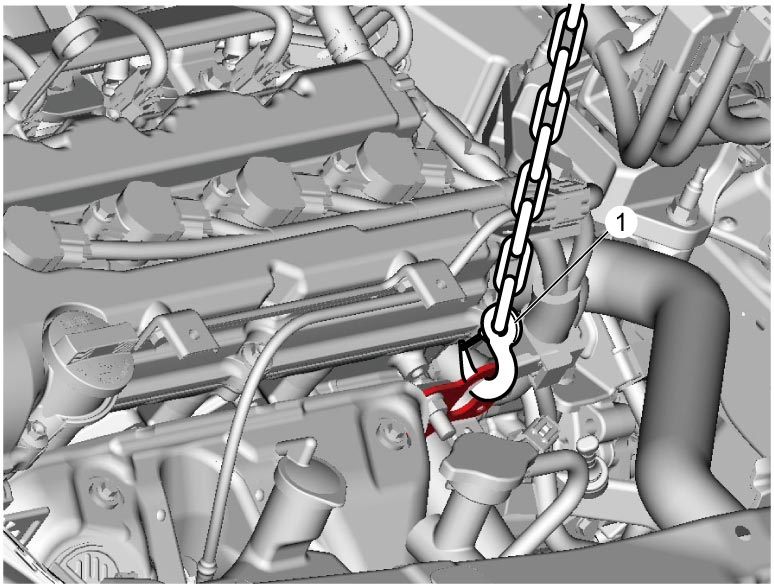

5B
| Manual Transaxle Unit Dismounting and Remounting |
Dismounting
1)Remove battery and bracket. 
2)Remove air cleaner assembly.
3)Remove engine undercover and left front fender lining.
4)Drain transaxle oil.
5)Remove front drive shaft assembly.
6)For 4WD model, remove transfer assembly.
7)Remove starting motor.
8)Remove clutch fluid pipe.
9)Disconnect gear shift and gear select control cables from transaxle.
10)Disconnect the following electric wires/connectors and each clamp.
•Battery ground cable
•Neutral position switch connector (if equipped)
•Neutral position switch connector (if equipped)
11)Loosen bolts and nuts fastening engine.
12)Support engine assembly using chain hoist (1) or engine crane.


 "Expand image")
13)Remove the following parts.
•Engine rear torque rod
•Engine rear torque rod bracket
•Engine left mounting No.1 bracket
•Engine left mounting No.2 bracket
•Engine rear torque rod bracket
•Engine left mounting No.1 bracket
•Engine left mounting No.2 bracket
14)Disconnect back up light switch connector and release wiring harness clamp.
15)Support transaxle with transmission jack.
16)Remove bolts and nuts fastening engine and transaxle and then detach transaxle from engine.
Remounting
Reverse dismounting procedure noting the following points.
NOTICE:
Failure to take proper precautions when remounting the manual transaxle can cause damage to parts.
•When installing the transaxle, be careful not to let the drive shaft scratch the oil seal.
Oil leakage may occur if the oil seal lip is scratched by the drive shaft.
•Do not use a hammer when installing the drive shaft joint into the differential gear.
Hitting the drive shaft joint with a hammer will damage the joint.
Oil leakage may occur if the oil seal lip is scratched by the drive shaft.
•Do not use a hammer when installing the drive shaft joint into the differential gear.
Hitting the drive shaft joint with a hammer will damage the joint.
•Tighten the following bolts and nut to specified torque.
•Add transaxle oil.
•Bleed clutch system.
•Check function of engine, clutch and transaxle.
•Check that there is no oil leakage and fluid leakage at each connection.
•Check front wheel alignment.
—Transaxle to engine bolt and nut:
—Engine rear torque rod and bracket bolt:
—Engine left mounting No.1 and No.2 bracket bolt:
•Set each clamp for wiring securely.—Engine rear torque rod and bracket bolt:
—Engine left mounting No.1 and No.2 bracket bolt:
•Add transaxle oil.
•Bleed clutch system.
•Check function of engine, clutch and transaxle.
•Check that there is no oil leakage and fluid leakage at each connection.
•Check front wheel alignment.